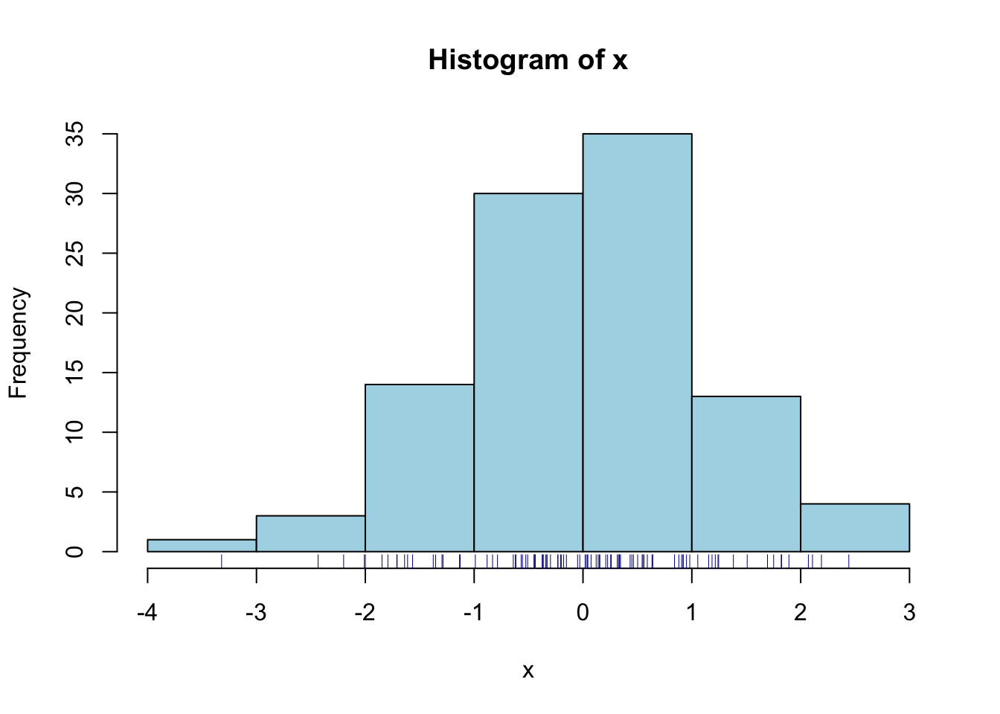
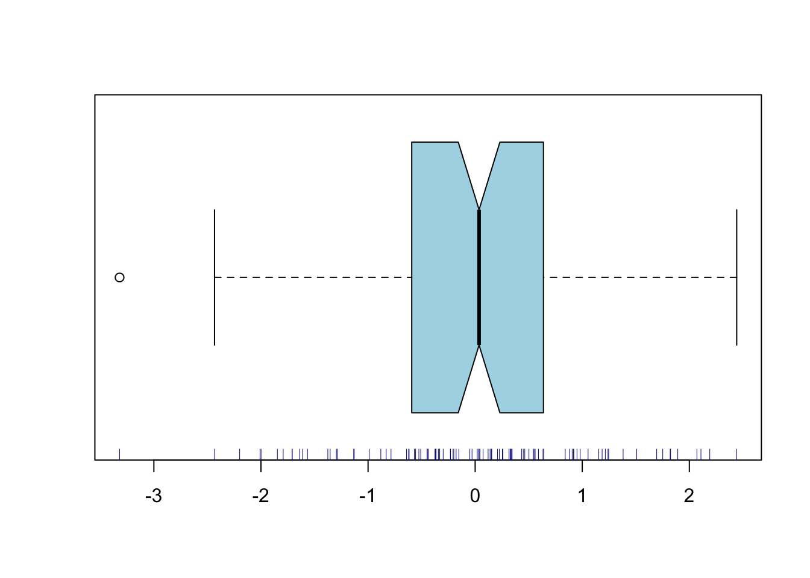

Chapter 4 Exploratory data analyses
R is more graphically oriented than most other statistical packages; it relies more on plots and figures for initial exploratory data analysis. Numerical summaries are of course also available.
4.1 hist
This command produces a histogram. There is a useful optional
argument breaks to specify the number of
bins (bars), or a vector of breaks between bins.
4.2 plot
The default version of this command produces a scattergram of two
variables. If you enter just one variable, then the index numbers of
the observations are used on the horizontal axis, and the values on
the vertical axis. Useful arguments are
title, and xlab
and ylab for axis labels. In addition, you
can use a third variable to vary the plot symbols.
4.3 rug
This command produces tick marks at the actual data values, yielding the visual effect of a rug. This is useful in combination with a scattergram or histogram. Try it out, with the following commands:7

4.4 boxplot
This yields a
boxplot summary (Tukey 1977) of one variable. You can also specify the
dependent and independent variable, with argument
dv~iv1; this will produce multiple
boxplots for the dependent variable, broken down by the independent
variable(s).
Two useful arguments for this command are:
notch=T to give additional information
about the distribution, and
varwidth=T to scale the width of the boxes
to the numbers of observations.

4.5 qqnorm
This produces a quantile–quantile (QQ) plot. This plots the
observed quantiles against the expected quantiles if the argument
variable would be distributed normally. If the variable is indeed
distributed normally, then the data should fall on an approximately
straight line. Deviations of this line indicate deviations from
normality. You can also add the expected line with
qqline.
4.6 summary
This command produces a numerical summary of the argument variable. However it does not supply standard measures of variability. We often need
4.7 var
to compute the variance of the argument variable. Related functions
are sd to compute standard deviation,
cov to compute the covariance between two
variables, and cor to compute their
correlation.
4.8 length
returns the length of the argument variable, i.e. the number of observations in that vector. This is useful for checking the number of data, as a preliminary for further analyses.
In the last command above, we have programmed a new function
valid.n, using standard functions provided
with R.
4.9 unique
returns a vector containing the (unsorted) unique values of the argument variable, without duplicates. This is also useful for checking your data.
## [1] 3 1 2## [1] 1 2 34.10 table
returns a frequency table, i.e. reports the number of observations for each (combination of) value(s) of one or more variables. This again is helpful for checking your data, to inspect the numbers of observations per cell (see also 3.2). Tables can be one-dimensional (see example below) or multidimensional. It is also possible to make a frequency table of a frequency table!
## x
## 1 2 3
## 7 7 7##
## 7
## 3A useful trick: if all cells should have the same number of observations, then the table-of-table should contain a single number representing the number of cells.
x[ sample(1:3*7, size=2) ] <- NA # replace 2 out of 21 obs by NA
table( table(x) ) # not ok: not all three cells have 7 observations, N<21##
## 6 7
## 2 1The lattice package (see Chapter 8) contains additional functions for higher-order data visualization:
xyplot,
histogram,
densityplot,
cloud,
and more. For more information, enter the command
help(lattice).
Now that we have obtained some insightful figures, we might want to
include these in our documents. The best procedure in Rstudio is to go to the Plots tab in the lower right pane, and select Export > Save as image... or Export > Save as PDF.... Figures in PDF format (extension
pdf) are easy to include in LaTeX documents, and are best for
publication. Other formats (e.g. png) are easy to include
in LaTeX, MS Word and web documents.
References
Tukey, John W. 1977. Exploratory Data Analysis. Addison-Wesley.
The semicolon separates multiple R commands on a single line of input.↩